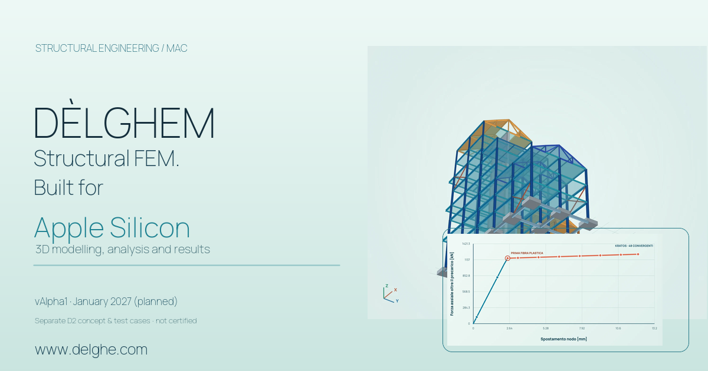
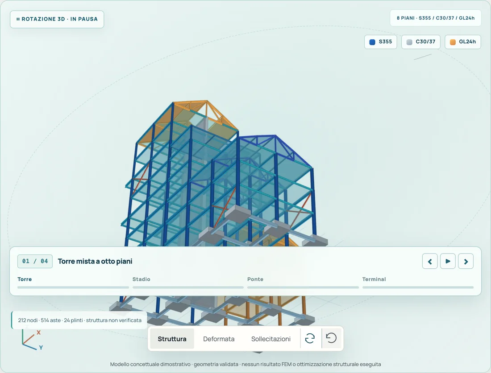
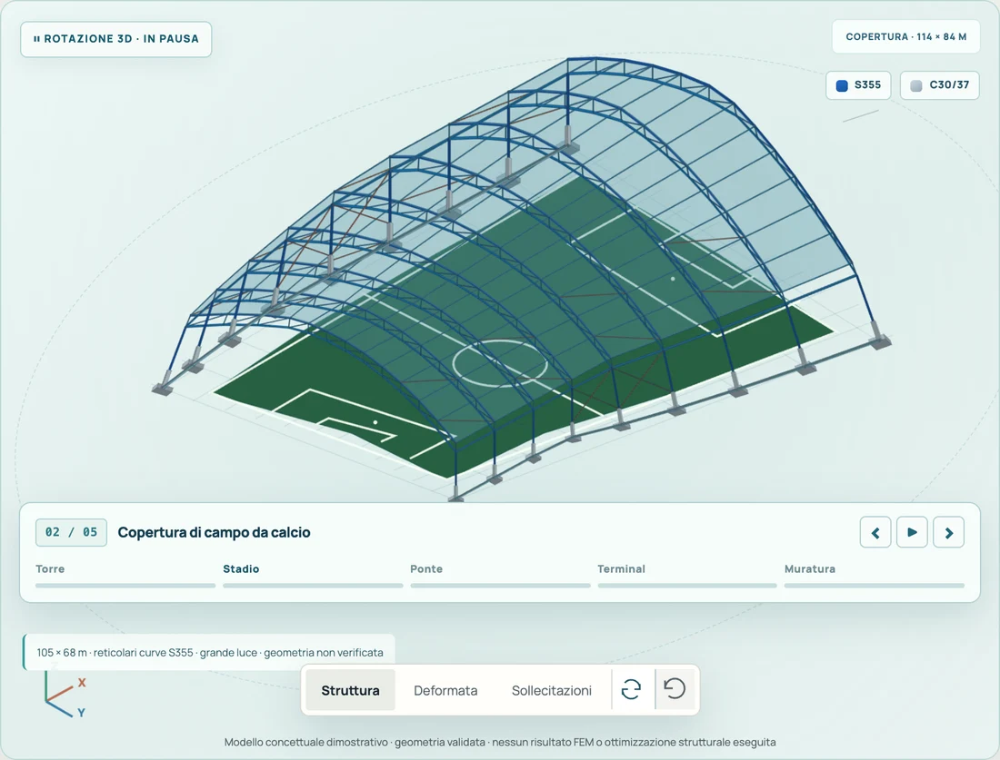
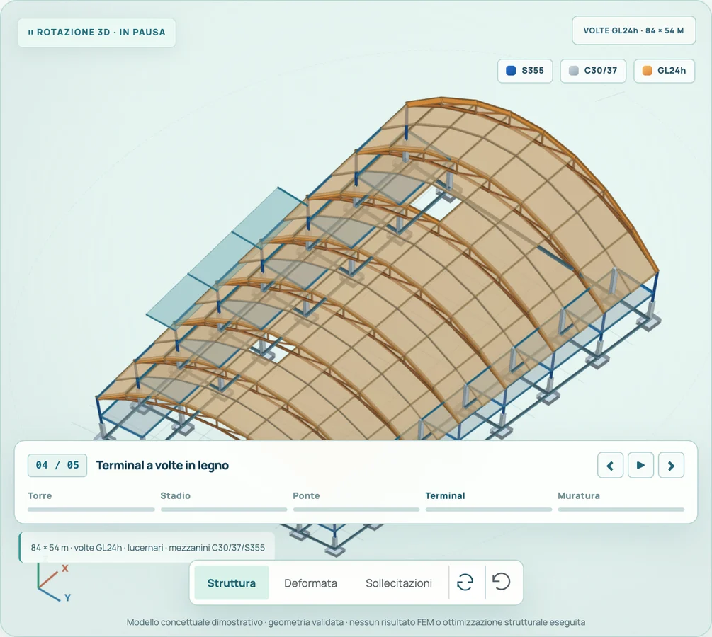
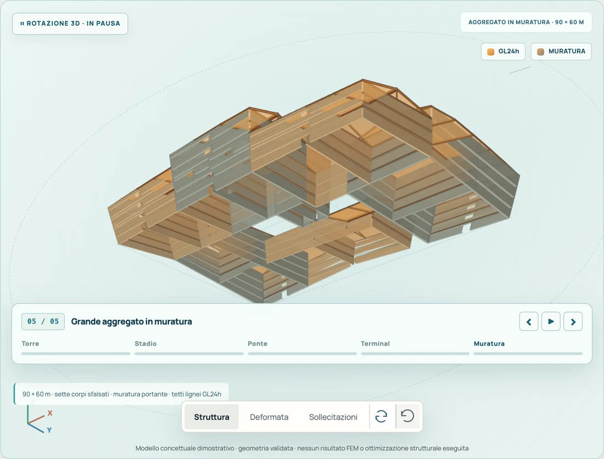

DÈLGHEM / PRESS & SHARE
A new way to see structures.
Public materials to introduce DÈLGHEM: real application screenshots, accurate development information and shareable copy for media and professional communities.
Actual application screenshots
SOCIAL PREVIEW / SHARE MATERIALS
Ready-to-share engineering preview
This 1200 × 630 px card combines a native D2 eight-storey geometry preview and a curve from a different genuine Pushover benchmark. It is not an application screenshot or a certified design check of the tower.
Open the original 1200 × 630 graphic ↗
The project, in brief.
- 01 / PLATFORM
macOS / Apple Silicon
A native application designed for Apple Silicon Macs, with no Windows virtual machine required.
- 02 / SCOPE
Structures / FEM
3D finite element modelling, analyses and checks within explicitly documented implemented domains.
- 03 / PROCESS
Model / Analyze / Document
In-development tools for steel, reinforced concrete, foundations, DXF and the Genius assistant, with clear limitations.
PRESS / QUOTE
Short description for articles and social posts
DÈLGHEM is structural engineering software in development for macOS and Apple Silicon. It combines 3D FEM modelling, analyses, drawings and engineering workflow tools. vAlpha1 is planned for January 2027.
DÈLGHEM D2 / NATIVE GEOMETRY-VALIDATED MODELS
Five native DÈLGHEM D2 structural models
Five native editable DÈLGHEM D2 conceptual models: masonry with timber roofs, a pinned/roller steel arch bridge, and a stadium roof with real Winkler grade beams and lateral bracing. These are not computed safety checks.





Conceptual structural models only: none has been dimensioned, analysed or approved for construction. The stadium Winkler subgrade stiffness is illustrative, not site-investigated soil data.
Open the interactive 3D gallery ↗REAL UI / macOS
Actual application screenshots
Screenshots come from real development builds; they do not certify every numerical check. Use them for articles and presentations about the project with DÈLGHEM attribution, without implying certifications or undocumented features.


Press contact and collaboration
Share DÈLGHEM
For editorial enquiries or proposals to collaborate on the project, use its public email address.
delghem@proton.me Back to the website